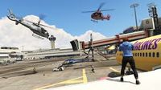

In Capture zijn er twee teams, samen met hun bases. Elk team moet proberen pakket van het andere team, die zich in het hoofdkwartier van het andere team te veroveren. In Capture, in tegenstelling tot andere concurrerende game modes, voertuigen kunnen worden gebruikt, die een geheel nieuw element toe aan de gameplay toevoegt.
Het doden van een vijand bedrijf pakket van uw team zal het pakket vallen. Op dit punt, kunt u uw team of het pakket afhalen automatisch worden teruggestuurd naar de basis of van het vijandelijke team kan het weer op te pakken. Een pakket kan worden vernietigd als het water.
